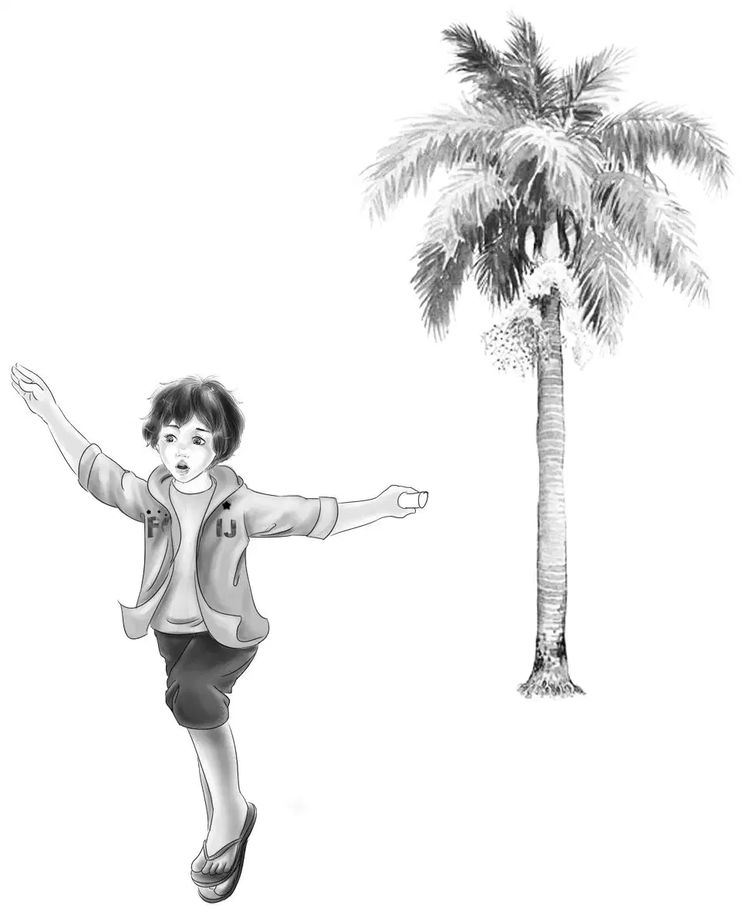
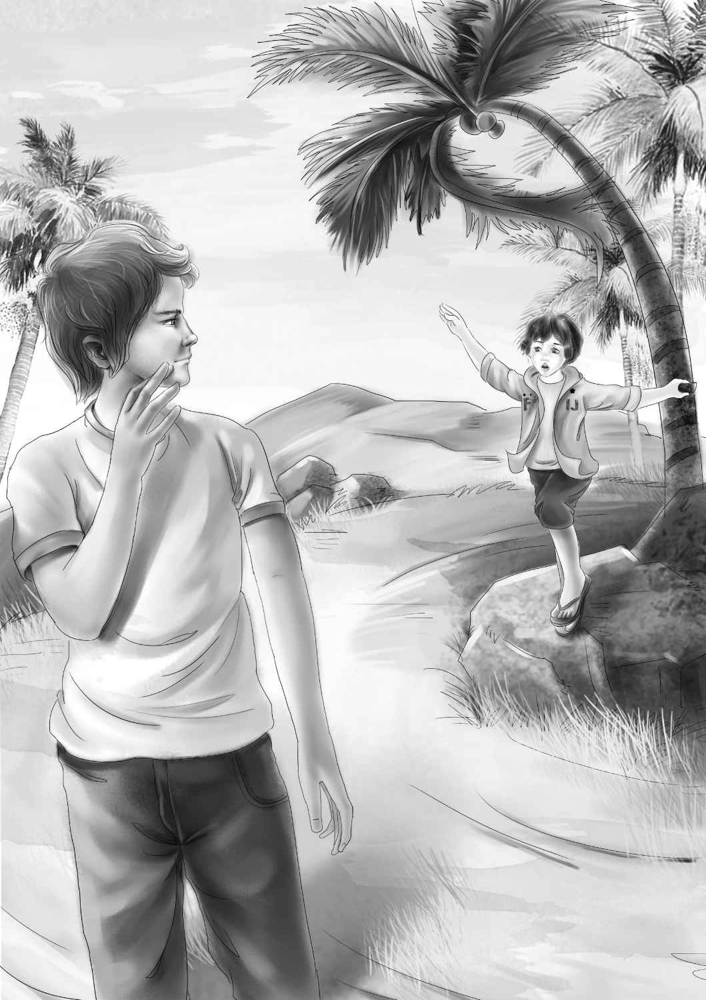

"Let's have a picnic," said Violet after the Aldens had made as many guesses as they could about what went on in the summer kitchen.
"We have a picnic every meal,I should say," said Benny."We always eat outdoors on our own rocks."
"Well,I mean a real picnic,"said Violet,"with a fire and hamburgers."
"Good for you,Violet," said Henry,smiling."I'm all for it.You mean a real cook-out."
"I don't want hamburgers this time.I want frankfurters," said Benny.
"You can have two if you want.Or three," said Jessie."And this time let's get a real fire going and not be in a hurry.It cooks better when it has burned down."
They went to the store and bought long rolls,big sweet pickles,and brownies as well as the meat.They left Watch outside.
Suddenly they heard him bark.
"Oh,boy," said Benny."He's barkingjust the way he does in the night."
They all rushed out and Jessie called,"Stop it,Watch! Come here!"
Then they saw that he was barking at the Cook boy.
"He won't bite," said Jessie.She smiled at the boy."He just barks."
Watch came to Jessie when she called,but he still growled in his throat.Violet could see that the boy did not like this.
"You don't need to be afraid of Watch," she said."He's a very gentle dog.He would never bite anybody."
"I bet he would,though," said the boy,"if anyone tried to hurt you kids."
He went quickly down the street and Watch still growled.No one had time to say anything more to the boy.
"Now that is very funny," said Benny."Watch did bark just exactly as he does at night.I bet that Cook boy is the one who is cooking seaweed."
Jessie laughed."You said once that somebody was cooking up something.And it turned out to be true.It's the Cook boy!"
"Now I'm sure of it," said Henry quietly."There aren't very many people in Conley who would be smart enough or interested enough to make those figures on that squared paper.The question is,what is he trying to do? And how does a woman fit into the puzzle?"
"Well,we can't do anything about it now," said Benny."Let's go on with our picnic."
"Is this picnic going to be lunch or supper,Violet?"
"Oh,lunch! We couldn't wait for supper,now we are all set."
The Aldens went down on the beach and picked up dry sticks of all sizes.Henry and Benny made a fireplace of stones.They put the sticks in the hole with papers and dry seaweed.
"No danger of fire here on the sand," said Henry."We have the whole ocean to put it out."
At last the fire burned down to hot coals.It was hard to wait,but they did.
Jessie gave Benny a long straight fork to cook his frankfurter on.He stuck the frankfurter on the end and put it over the fire.He had no sooner done this than the frankfurter slipped off.
"Look at your frankfurter,Ben!" cried Henry."It's in the fire!"
"Oh,so it is," cried Benny.He stuck his fork in again and lifted it out.The frankfurter was burning on one side.
"I like it burned," he said.He blew out the fire.
"But not burned up," said Mr.Alden,laughing.As he spoke,plop! went the frankfurter again.
"Do you want me to help you,Benny?" asked Jessie laughing,too.
"No,indeed! Thank you! If I can't cook a frankfurter,I'm a monkey."
"Well,I guess you're a monkey then," teased Henry,"for there goes your frankfurter."
Benny picked it up again."You stay on!" he said to the frankfurter.
"Watch out,Ben! Ooops! There she goes!" cried Henry.He couldn't help laughing.The poor frankfurter was black all over.
This time just as Benny was putting it on the fork it slipped off again—swoosh!
"This time I'll hold my fork the other way," said Benny.His face was red with the hot fire."I guess I can eat my own cooking."
He put the frankfurter into a roll and began to eat it."Delicious!" he said,chewing happily.
"Please don't eat it,Ben," Henry begged."You can have another and maybe it won't slip off.You can put it on our grill this time."
"No," said Benny."No grill for me.I have to put it on a long fork.That's the way to cook a frankfurter."
"What does it taste like,Ben?" asked Henry,laughing.
"Coal," said Benny."Delicious coal."
"Maybe charcoal," said Violet."That's what it really is.I hope you'll try another one and have a decent lunch."
Benny was standing up on a rock eating brownies.He looked toward the street.There was the Cook boy going past.

"Hi!" shouted Benny."Hello!"
The boy did answer.It was a very gruff hello.Then he went along.
Henry said thoughtfully,"It might be that he's more afraid than cross—afraid someone will stop his secret work."
Benny jumped down."You know I think that Cook boy would like to come and eat with us.But he would never do it.I saw his face before he saw me.He looked as if he wished he could eat at our picnic."
"Very likely you are right," said Mr.Alden."Maybe you can get to be friends little by little."
But as it turned out,something happened suddenly—not little by little.